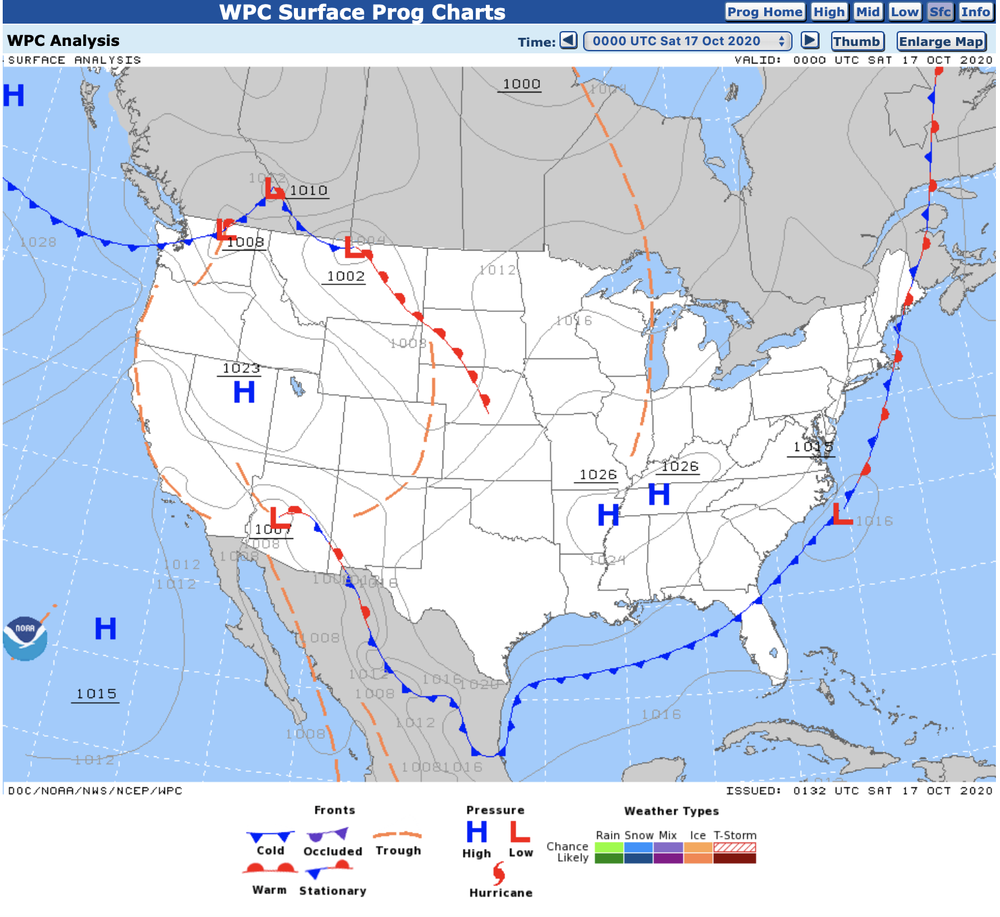

There are a few main types of aviation weather reports. This article will discuss the following:
METAR
TAF
Prognostic Outlook
AIRMETs/SIGMETs
All pilots! Attaining up-to-date weather reports is an important
part of any preflight procedure.
Decoding Weather Reports
METAR
METAR reports are current weather forecasts. They are typically issued at 50 minutes past the hour, plus or minus 10 minutes. Special METARs may be issued for signifigant or changing weather at any time.
A TAF report is a Terminal Aerodrome Forecast. It has a wider valid period, typically of about 24 hours. A TAF is one of the primary tools a pilot uses when planning a flight to determine conditions along the route of flight. TAF reports are issued every six hours.
Prog charts cover very large areas, such as the entire United States. They depict fronts, special weather systems, and high/low pressure systems. Pilots can use prognostic charts to get an idea of how weather should behave in a local area or across a large area.

Low Pressure Systems
Low pressure systems are typically assumed to have the following characteristics.
A mass of air that is considered less dense than the air around it
Generally brings bad weather
Generally brings warmer temperatures and higher humidity
High Pressure Systems
High pressure systems are typically assumed to have the following characteristics.
A mass of air that is considered more dense than the air around it
Generally brings fair weather
Generally brings cooler temperatures and lower humidity
AIRMETs and SIGMETs
AIRMETs
AIRMETs are a description of any current or forecast weather on a route of a flight that could impact aircraft safety, more generally for general aviation pilots. There are three types:
Airmet Sierra - Instrument Flight Rules prevail in the affected area.
Airmet Zulu - (Moderate) Icing, and provides freezing level.
Airmet Tango - (Moderate) Turbulance, sustained surface winds of 30 knots or greater, and/or non convective low-level wind shear.
AIRMETs are routinely issued for six-hour periods beginning at 0145Z during Daylight Saving Time and at 0245Z during Standard Time. AIRMETs can be modified as necessary.
SIGMETs
SIGMETs are a description of any current or forecast weather on a route of a flight or in an area that should be carefully considered by all pilots because of its potential impact on flight/aircraft safety. Non-Convective SIGMETs are issued when:
Severe or greater turbulance over 3,000 square mile region or larger
Severe or greater icing over 3,000 square mile region or larger
SIGMETs are issued when needed and are valid for four hours. SIGMETs for hurricanes and volcanic ash outside the CONUS are valid up to six hours.
Convective SIGMETs
Convective SIGMETs are a description of any current or forecast CONVECTIVE weather on a route of a flight or in an area that should be immediately considered by all pilots because of its potential impact on flight/aircraft safety. Convective SIGMETs are issued when:
An area of embedded thunderstorms
A line of thunderstorms
Thunderstorms greater than or equal to VIP level 4 affecting 40% or more of an area at least 3000 square miles
Severe surface weather including surface winds greater than or equal to 50 knots
Hail at the surface greater than or equal to 3/4 inches in diameter
Tornadoes
A Convective SIGMET is valid for no more than 2 hours and they are issued hourly at Hour+55.